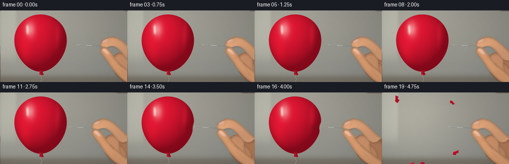
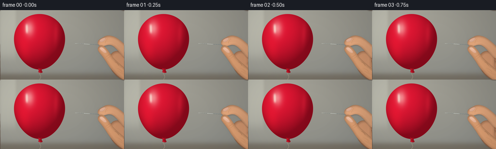

CODING AGENTS AS PIXEL WORLD MODELS
traex/GPT-6.1-Sol · phygen_021
点击播放 · 原生 RGB 像素
逐轮保存的候选
回放视频、检查图与代码变化。
每份候选均可单独播放。实际图片检查记录在下方工具轨迹中。
候选 01播放与检查图
点击播放 · 原生 RGB 像素


展开代码变化
--- 上一保存版本
+++ 本次保存版本
@@ -0,0 +1,237 @@
+from pathlib import Path
+import json
+import numpy as np
+from PIL import Image, ImageDraw, ImageFilter
+from scipy.ndimage import distance_transform_edt, gaussian_filter
+import artifact_io
+
+ROOT=Path(__file__).resolve().parent
+SPEC=json.loads((ROOT/'task_spec.json').read_text())
+S=4
+W,H=SPEC['width']*S,SPEC['height']*S
+Y,X=np.mgrid[0:H,0:W].astype(float); X/=S; Y/=S
+rng=np.random.default_rng(2026)
+noise=gaussian_filter(rng.normal(0,1,(H,W)),.65)
+
+def path(points):
+ """List of a start point and cubic Bezier segments, in logical pixels."""
+ verts=[points[0]]; prev=np.array(points[0],float)
+ for seg in points[1:]:
+ a,b,c=map(lambda p:np.array(p,float),seg)
+ for t in np.linspace(0,1,30)[1:]:
+ v=(1-t)**3*prev+3*(1-t)**2*t*a+3*(1-t)*t*t*b+t**3*c
+ verts.append(tuple(v))
+ prev=c
+ return verts
+
+def mask_path(p,shift=0):
+ im=Image.new('L',(W,H)); d=ImageDraw.Draw(im)
+ d.polygon([(int((x+shift)*S),int(y*S)) for x,y in path(p)],fill=255)
+ return np.asarray(im)/255.
+
+def overlay(arr,col,alpha):
+ return arr*(1-alpha[...,None])+np.asarray(col)*alpha[...,None]
+
+# Defocused indoor background, with subtle daylight and a darker table below.
+bg=np.zeros((H,W,3),float)
+light=np.exp(-((X-42)/128)**2-((Y-37)/115)**2)
+bg[:]=[133,135,131]
+bg+=light[...,None]*np.array([44,40,32])
+bg+=np.exp(-((X-228)/100)**2-((Y-12)/96)**2)[...,None]*np.array([7,4,0])
+# Softly out of focus window reflected by the latex, not a foreground object.
+bg+=np.exp(-((X-16)/17)**8-((Y-39)/61)**8)[...,None]*np.array([15,16,15])
+table=1/(1+np.exp(-(Y-132)/2.9))
+bg=overlay(bg,[103,93,79],table*.65)
+bg+=noise[...,None]*.35
+
+palm=[(274,88),((257,83),(245,83),(237,87)),((225,91),(223,106),(227,116)),((231,131),(246,142),(262,150)),((280,162),(297,153),(297,135)),((292,117),(285,101),(274,88))]
+fold1=[(253,88),((244,83),(236,84),(231,89)),((224,95),(222,104),(227,111)),((231,117),(242,122),(249,126)),((255,129),(262,124),(259,117)),((255,107),(260,95),(253,88))]
+fold2=[(260,106),((249,98),(241,100),(237,107)),((232,113),(237,123),(244,127)),((253,134),(260,138),(267,136)),((276,133),(272,114),(260,106))]
+index=[(280,91),((264,79),(256,68),(243,59)),((233,52),(222,51),(215,55)),((208,59),(202,61),(201.8,67)),((201,71),(205,74),(211,74.4)),((217,75),(221,71),(227,72)),((236,73),(243,84),(249,91)),((259,104),(270,104),(280,91))]
+thumb=[(278,135),((261,124),(249,113),(238,103)),((228,94),(225,84),(216,76)),((212,72.5),(207,72),(203.8,75.6)),((200,80),(202,84),(206,89)),((214,99),(218,105),(223,113)),((238,136),(259,149),(273,152)),((281,151),(284,140),(278,135))]
+
+# Render the natural skin as bevelled curved surfaces, without drawn outlines.
+def skin_layer(arr,p,shift,base,bevel=5,shadow=True):
+ mask=mask_path(p,shift)
+ if shadow:
+ sh=gaussian_filter(mask,1.05*S)
+ sh=np.roll(np.roll(sh,2*S,axis=0),1*S,axis=1)
+ arr=overlay(arr,[68,41,28],sh*.20)
+ dist=distance_transform_edt(mask)/S
+ z=np.sqrt(np.clip(dist/bevel,0,1))
+ gx=gaussian_filter(np.gradient(z,axis=1)*S,1.1*S)
+ gy=gaussian_filter(np.gradient(z,axis=0)*S,1.1*S)
+ lum=.77+.24*z-.32*gx-.40*gy
+ lum=np.clip(lum,.54,1.18)
+ variation=1+.024*np.sin((X-shift)/24)+.011*np.sin(Y/8)
+ col=np.asarray(base)[None,None,:]*lum[...,None]*variation[...,None]
+ col+=noise[...,None]*1.25
+ # soft diffuse sheen on the skin
+ col+=np.exp(-((X-shift-217)/31)**2-((Y-65)/35)**2)[...,None]*[7,5,3]
+ return overlay(arr,col,mask)
+
+def stroke(im,pts,fill,width=0.6):
+ d=ImageDraw.Draw(im)
+ d.line([(round(x*S),round(y*S)) for x,y in pts],fill=fill,width=max(1,round(width*S)),joint='curve')
+
+def hand(arr,shift):
+ arr=skin_layer(arr,palm,shift,[176,121,87],9)
+ arr=skin_layer(arr,fold2,shift,[191,135,97],6)
+ arr=skin_layer(arr,fold1,shift,[202,144,106],6)
+ arr=skin_layer(arr,index,shift,[211,155,116],5)
+ arr=skin_layer(arr,thumb,shift,[214,154,111],6)
+ im=Image.fromarray(np.uint8(np.clip(arr,0,255))).convert('RGBA')
+ # Creases bend around joints and taper rather than outlining fingers.
+ marks=Image.new('RGBA',(W,H)); d=ImageDraw.Draw(marks)
+ curves=[([(222,59),((219,62),(217,65),(217,69))],(112,68,46,69),.5),
+ ([(225,59),((222,62),(221,64),(220,67))],(132,83,55,47),.35),
+ ([(226,91),((223,94),(220,96),(218,97))],(133,78,45,72),.6),
+ ([(229,94),((226,97),(224,99),(221,100))],(125,76,47,57),.4),
+ ([(237,107),((241,108),(244,112),(245,115))],(104,64,42,83),.65),
+ ([(241,120),((247,122),(251,125),(252,129))],(119,75,46,59),.5),
+ ([(243,126),((250,130),(255,133),(260,134))],(115,75,46,44),.6)]
+ for p,col,width in curves:
+ stroke(marks,[(x+shift,y) for x,y in path(p)],col,width)
+ # A small, foreshortened index nail on the outer side of the fingertip.
+ nail_i=[(206,62),((210,58.7),(214,57),(217,57.4)),((219,60),(216,63),(213,65)),((209,67),(205,67),(206,62))]
+ nail_t=[(205.6,78.6),((208,76.1),(211,76.5),(214,79)),((218,82),(220.6,86),(220,88)),((217,90),(214.7,89),(211.5,86)),((208,83),(205.2,81),(205.6,78.6))]
+ # Composite shaded and slightly translucent nails.
+ im=Image.alpha_composite(im,marks)
+ arr=np.asarray(im.convert('RGB')).astype(float)
+ for p,base in [(nail_i,[224,174,148]),(nail_t,[232,182,155])]:
+ mask=mask_path(p,shift)
+ dst=distance_transform_edt(mask)/S
+ nn=np.clip(dst/1.2,0,1)
+ col=np.asarray(base)[None,None,:]*(.85+.15*nn[...,None])
+ col=col+np.exp(-((X-shift-211)/6)**2-((Y-80)/5)**2)[...,None]*[9,9,8]
+ arr=overlay(arr,col,mask*.94)
+ im=Image.fromarray(np.uint8(np.clip(arr,0,255))).convert('RGBA')
+ marks=Image.new('RGBA',(W,H))
+ stroke(marks,[(207+shift,78.2),(209+shift,77.8),(212+shift,79.7),(215+shift,82.9)],(255,222,200,122),.55)
+ stroke(marks,[(207+shift,62.5),(210+shift,60.9),(213+shift,59.5)],(255,222,204,95),.4)
+ # Faint wrist tendon and natural skin folds, far from the focal point.
+ stroke(marks,[(250+shift,120),(258+shift,127),(268+shift,136)],(245,193,141,41),1.2)
+ return np.asarray(Image.alpha_composite(im,marks).convert('RGB')).astype(float)
+
+
+def balloon(arr,dent,swelling=0):
+ cy=65.5; cx=81.5
+ v=(Y-cy)/57.6
+ rx=52.5*(1-.105*v-.035*v*v)
+ # Localized push of the membrane by a point: tight dimple at contact.
+ depression=dent*np.exp(-((Y-69.0)/7.5)**2)
+ # Perturb only the right-hand side of the body.
+ u=(X-cx+depression*np.clip((X-cx)/35,0,1))/rx
+ q=u*u+v*v
+ mask=np.clip((1-q)*S*24+.5,0,1)
+ z=np.sqrt(np.clip(1-q,0,1))
+ nx=u; ny=v
+ diffuse=np.clip(-.45*nx-.52*ny+.70*z,0,1)
+ col=np.empty((H,W,3),float)
+ # Rich red latex with dark edge shading and internal transmitted light.
+ col[...,0]=125+98*diffuse+14*z
+ col[...,1]=8+14*diffuse+3*z
+ col[...,2]=24+25*diffuse+6*z
+ rim=np.exp(-z/0.15)
+ col+=rim[...,None]*[25,4,5]
+ back=np.exp(-((u+.64)/.25)**2-((v-.35)/.52)**2)
+ col+=back[...,None]*[22,3,3]
+ # A broad rectangular softbox reflection follows the convex surface.
+ spec=np.exp(-((nx+.39)/.18)**2-((ny+.48)/.26)**2)
+ col=col*(1-spec[...,None]*.58)+np.array([255,219,207])*spec[...,None]*.58
+ white=np.exp(-((nx+.48)/.050)**2-((ny+.47)/.16)**4)
+ col=col*(1-white[...,None]*.72)+np.array([255,245,228])*white[...,None]*.72
+ secondary=np.exp(-((u-.63)/.09)**2-((v+.28)/.42)**2)
+ col+=secondary[...,None]*[21,7,8]
+ # Minute latex variation, kept below the appearance of visible grain.
+ col+=noise[...,None]*.58
+ if dent>0:
+ # Contact dimple catches a tiny crescent of light above, shadow below.
+ dc=np.exp(-((X-(133.5-dent))/3.8)**2-((Y-69.5)/8)**2)
+ col+=dc[...,None]*np.array([-15,-3,-3])*min(1,dent/4)
+ line=np.exp(-((X-(133.5-dent))/1.2)**2-((Y-64)/3.2)**2)
+ col+=line[...,None]*[18,5,4]
+ arr=overlay(arr,col,mask)
+ # The puckered neck and tied balloon knot.
+ neck=[(78.5,120),((80,123),(79,125),(80.5,126.2)),((78,127),(79,130),(84,130.1)),((88,130.3),(89,128),(86,126)),((86,123),(86,122),(86,120)),((83,122),(81,122),(78.5,120))]
+ mk=mask_path(neck)
+ c=np.empty((H,W,3)); sh=.78+.24*np.exp(-((X-81)/2.2)**2)
+ c[:]=[192,18,37]; c*=sh[...,None]
+ arr=overlay(arr,c,mk)
+ im=Image.fromarray(np.uint8(np.clip(arr,0,255)))
+ d=ImageDraw.Draw(im)
+ stroke(im,path([(82,130),((81,133),(84,136),(84,138)),((84,142),(80,142),(82,148))]),(180,164,140),.55)
+ stroke(im,[(80.5,125.4),(84.5,125.9)],(121,8,23),.6)
+ stroke(im,[(80.5,128),(83,128.7),(85.7,128.3)],(244,67,81),.5)
+ return np.asarray(im).astype(float)
+
+def needle(arr,tip,grip,penetrate=False):
+ im=Image.fromarray(np.uint8(np.clip(arr,0,255))).convert('RGBA')
+ layer=Image.new('RGBA',(W,H)); d=ImageDraw.Draw(layer)
+ # A real tapered steel sewing needle, oriented almost horizontally.
+ y0=69.0; y1=72.2
+ pts=[(tip,y0),(tip+5,y0-.22),(grip+2,y1-.57),(grip+2,y1+.54),(tip+5,y0+.32)]
+ d.polygon([(int(x*S),int(y*S)) for x,y in pts],fill=(91,103,104,255))
+ stroke(layer,[(tip+.6,y0),(tip+7,y0-.10),(grip+1,y1-.23)],(236,241,232,255),.35)
+ stroke(layer,[(tip+7,y0+.28),(grip+1,y1+.35)],(62,70,72,220),.28)
+ # Slight highlight glint on the shaft, not a huge artificial flare.
+ stroke(layer,[(tip+19,70.02),(tip+31,70.65)],(255,255,243,245),.24)
+ if penetrate:
+ d.ellipse(((tip+1.1)*S,(y0-.68)*S,(tip+2.5)*S,(y0+.7)*S),fill=(70,7,20,255))
+ stroke(layer,[(tip,y0),(tip+1.3,y0+.04)],(238,239,223,255),.3)
+ return np.asarray(Image.alpha_composite(im,layer).convert('RGB')).astype(float)
+
+# Torn latex contracts immediately into small curled scraps, never rigid shards.
+def scraps(arr,age):
+ im=Image.fromarray(np.uint8(np.clip(arr,0,255))).convert('RGBA')
+ layer=Image.new('RGBA',(W,H)); d=ImageDraw.Draw(layer)
+ pieces=[(60,38,-31,-37,16,7,-.65),(39,69,-44,4,14,6,.3),(73,96,-16,41,18,8,.55),(112,40,31,-32,12,5,-.5),(117,85,33,26,15,6,.5),(82,111,1,27,11,8,.1)]
+ for i,(x,y,vx,vy,l,w,a) in enumerate(pieces):
+ dt=age*.32
+ x+=vx*dt; y+=vy*dt+12*dt*dt
+ angle=a+age*(.4 if i%2 else -.35)
+ shape=[(-.5*l,0),(-.22*l,-w*.58),(.15*l,-w*.34),(.5*l,-w*.25),(.3*l,w*.5),(0,w*.23),(-.18*l,w*.7)]
+ pp=[(x+u*np.cos(angle)-v*np.sin(angle),y+u*np.sin(angle)+v*np.cos(angle)) for u,v in shape]
+ d.polygon([(int(u*S),int(v*S)) for u,v in pp],fill=(177+10*(i%3),15,36,255))
+ stroke(layer,[pp[0],pp[1],pp[2],pp[3]],(243,58,79,220),.8)
+ stroke(layer,[pp[4],pp[5],pp[6]],(100,8,25,215),.65)
+ # Remaining knotted neck falls down with its string.
+ drop=age*5
+ d.ellipse((78*S,(125+drop)*S,86*S,(130+drop)*S),fill=(183,19,40,255))
+ stroke(layer,path([(82,129+drop),((84,134+drop),(81,139+drop),(82,146+drop))]),(184,168,147,255),.6)
+ return np.asarray(Image.alpha_composite(im,layer).convert('RGB')).astype(float)
+
+frames=[]
+for i in range(SPEC['frames']):
+ # Slow, almost constant fingertip movement; the last millimeters stretch latex.
+ if i<=16:
+ movement=1.56*i
+ else:
+ # Small natural recoil of the fingers after bursting.
+ movement=24.96-1.05*(i-16)
+ tip=154.0-movement
+ grip=212.0-movement
+ shift=-movement
+ arr=bg.copy()
+ if i<=16:
+ # Soft and distant balloon shadow on the neutral backdrop.
+ shadow=np.exp(-((X-88)/60)**2-((Y-77)/60)**2)
+ arr=overlay(arr,[82,82,75],shadow*.17)
+ dent=max(0,134.0-tip)
+ # At the final intact frame the steel tip actually crosses the membrane.
+ if i==16: dent=max(0,dent-1.5)
+ arr=balloon(arr,dent)
+ arr=needle(arr,tip,grip,penetrate=i==16)
+ else:
+ arr=scraps(arr,i-16)
+ arr=needle(arr,tip,grip)
+ # Grip occludes the rear section of the needle correctly.
+ arr=hand(arr,shift)
+ # Gentle camera vignette and photographic fine grain.
+ vignette=1-.075*((X-124)/167)**2-.04*((Y-65)/99)**2
+ arr*=vignette[...,None]
+ im=Image.fromarray(np.uint8(np.clip(arr,0,255)))
+ im=im.resize((SPEC['width'],SPEC['height']),Image.Resampling.LANCZOS)
+ frames.append(np.asarray(im))
+artifact_io.save(np.stack(frames).astype(np.uint8),ROOT)
+print('Saved',len(frames),'RGB frames')
可观测工具轨迹
实际执行的命令与返回图片。
命令 1exit 0
/bin/bash -lc 'ls -la && cat prompt.txt && cat GENERATION_RULES.md && cat task_spec.json'
命令 2exit 0
/bin/bash -lc "cat artifact_io.py && python - <<'PY' import importlib.util for x in ['numpy','PIL','scipy']: print(x, bool(importlib.util.find_spec(x))) PY"
命令 3exit 0
/bin/bash -lc "cat > generate.py <<'PY'
from pathlib import Path
import json
import numpy as np
from PIL import Image, ImageDraw, ImageFilter
from scipy.ndimage import distance_transform_edt, gaussian_filter
import artifact_io
ROOT=Path(__file__).resolve().parent
SPEC=json.loads((ROOT/'task_spec.json').read_text())
S=4
W,H=SPEC['width']*S,SPEC['height']*S
Y,X=np.mgrid[0:H,0:W].astype(float); X/=S; Y/=S
rng=np.random.default_rng(2026)
noise=gaussian_filter(rng.normal(0,1,(H,W)),.65)
def path(points):
\"\"\"List of a start point and cubic Bezier segments, in logical pixels.\"\"\"
verts=[points[0]]; prev=np.array(points[0],float)
for seg in points[1:]:
a,b,c=map(lambda p:np.array(p,float),seg)
for t in np.linspace(0,1,30)[1:]:
v=(1-t)**3*prev+3*(1-t)**2*t*a+3*(1-t)*t*t*b+t**3*c
verts.append(tuple(v))
prev=c
return verts
def mask_path(p,shift=0):
im=Image.new('L',(W,H)); d=ImageDraw.Draw(im)
d.polygon([(int((x+shift)*S),int(y*S)) for x,y in path(p)],fill=255)
return np.asarray(im)/255.
def overlay(arr,col,alpha):
return arr*(1-alpha[...,None])+np.asarray(col)*alpha[...,None]
# Defocused indoor background, with subtle daylight and a darker table below.
bg=np.zeros((H,W,3),float)
light=np.exp(-((X-42)/128)**2-((Y-37)/115)**2)
bg[:]=[133,135,131]
bg+=light[...,None]*np.array([44,40,32])
bg+=np.exp(-((X-228)/100)**2-((Y-12)/96)**2)[...,None]*np.array([7,4,0])
# Softly out of focus window reflected by the latex, not a foreground object.
bg+=np.exp(-((X-16)/17)**8-((Y-39)/61)**8)[...,None]*np.array([15,16,15])
table=1/(1+np.exp(-(Y-132)/2.9))
bg=overlay(bg,[103,93,79],table*.65)
bg+=noise[...,None]*.35
palm=[(274,88),((257,83),(245,83),(237,87)),((225,91),(223,106),(227,116)),((231,131),(246,142),(262,150)),((280,162),(297,153),(297,135)),((292,117),(285,101),(274,88))]
fold1=[(253,88),((244,83),(236,84),(231,89)),((224,95),(222,104),(227,111)),((231,117),(242,122),(249,126)),((255,129),(262,124),(259,117)),((255,107),(260,95),(253,88))]
fold2=[(260,106),((249,98),(241,100),(237,107)),((232,113),(237,123),(244,127)),((253,134),(260,138),(267,136)),((276,133),(272,114),(260,106))]
index=[(280,91),((264,79),(256,68),(243,59)),((233,52),(222,51),(215,55)),((208,59),(202,61),(201.8,67)),((201,71),(205,74),(211,74.4)),((217,75),(221,71),(227,72)),((236,73),(243,84),(249,91)),((259,104),(270,104),(280,91))]
thumb=[(278,135),((261,124),(249,113),(238,103)),((228,94),(225,84),(216,76)),((212,72.5),(207,72),(203.8,75.6)),((200,80),(202,84),(206,89)),((214,99),(218,105),(223,113)),((238,136),(259,149),(273,152)),((281,151),(284,140),(278,135))]
# Render the natural skin as bevelled curved surfaces, without drawn outlines.
def skin_layer(arr,p,shift,base,bevel=5,shadow=True):
mask=mask_path(p,shift)
if shadow:
sh=gaussian_filter(mask,1.05*S)
sh=np.roll(np.roll(sh,2*S,axis=0),1*S,axis=1)
arr=overlay(arr,[68,41,28],sh*.20)
dist=distance_transform_edt(mask)/S
z=np.sqrt(np.clip(dist/bevel,0,1))
gx=gaussian_filter(np.gradient(z,axis=1)*S,1.1*S)
gy=gaussian_filter(np.gradient(z,axis=0)*S,1.1*S)
lum=.77+.24*z-.32*gx-.40*gy
lum=np.clip(lum,.54,1.18)
variation=1+.024*np.sin((X-shift)/24)+.011*np.sin(Y/8)
col=np.asarray(base)[None,None,:]*lum[...,None]*variation[...,None]
col+=noise[...,None]*1.25
# soft diffuse sheen on the skin
col+=np.exp(-((X-shift-217)/31)**2-((Y-65)/35)**2)[...,None]*[7,5,3]
return overlay(arr,col,mask)
def stroke(im,pts,fill,width=0.6):
d=ImageDraw.Draw(im)
d.line([(round(x*S),round(y*S)) for x,y in pts],fill=fill,width=max(1,round(width*S)),joint='curve')
def hand(arr,shift):
arr=skin_layer(arr,palm,shift,[176,121,87],9)
arr=skin_layer(arr,fold2,shift,[191,135,97],6)
arr=skin_layer(arr,fold1,shift,[202,144,106],6)
arr=skin_layer(arr,index,shift,[211,155,116],5)
arr=skin_layer(arr,thumb,shift,[214,154,111],6)
im=Image.fromarray(np.uint8(np.clip(arr,0,255))).convert('RGBA')
# Creases bend around joints and taper rather than outlining fingers.
marks=Image.new('RGBA',(W,H)); d=ImageDraw.Draw(marks)
curves=[([(222,59),((219,62),(217,65),(217,69))],(112,68,46,69),.5),
([(225,59),((222,62),(221,64),(220,67))],(132,83,55,47),.35),
([(226,91),((223,94),(220,96),(218,97))],(133,78,45,72),.6),
([(229,94),((226,97),(224,99),(221,100))],(125,76,47,57),.4),
([(237,107),((241,108),(244,112),(245,115))],(104,64,42,83),.65),
([(241,120),((247,122),(251,125),(252,129))],(119,75,46,59),.5),
([(243,126),((250,130),(255,133),(260,134))],(115,75,46,44),.6)]
for p,col,width in curves:
stroke(marks,[(x+shift,y) for x,y in path(p)],col,width)
# A small, foreshortened index nail on the outer side of the fingertip.
nail_i=[(206,62),((210,58.7),(214,57),(217,57.4)),((219,60),(216,63),(213,65)),((209,67),(205,67),(206,62))]
nail_t=[(205.6,78.6),((208,76.1),(211,76.5),(214,79)),((218,82),(220.6,86),(220,88)),((217,90),(214.7,89),(211.5,86)),((208,83),(205.2,81),(205.6,78.6))]
# Composite shaded and slightly translucent nails.
im=Image.alpha_composite(im,marks)
arr=np.asarray(im.convert('RGB')).astype(float)
for p,base in [(nail_i,[224,174,148]),(nail_t,[232,182,155])]:
mask=mask_path(p,shift)
dst=distance_transform_edt(mask)/S
nn=np.clip(dst/1.2,0,1)
col=np.asarray(base)[None,None,:]*(.85+.15*nn[...,None])
col=col+np.exp(-((X-shift-211)/6)**2-((Y-80)/5)**2)[...,None]*[9,9,8]
arr=overlay(arr,col,mask*.94)
im=Image.fromarray(np.uint8(np.clip(arr,0,255))).convert('RGBA')
marks=Image.new('RGBA',(W,H))
stroke(marks,[(207+shift,78.2),(209+shift,77.8),(212+shift,79.7),(215+shift,82.9)],(255,222,200,122),.55)
stroke(marks,[(207+shift,62.5),(210+shift,60.9),(213+shift,59.5)],(255,222,204,95),.4)
# Faint wrist tendon and natural skin folds, far from the focal point.
stroke(marks,[(250+shift,120),(258+shift,127),(268+shift,136)],(245,193,141,41),1.2)
return np.asarray(Image.alpha_composite(im,marks).convert('RGB')).astype(float)
def balloon(arr,dent,swelling=0):
cy=65.5; cx=81.5
v=(Y-cy)/57.6
rx=52.5*(1-.105*v-.035*v*v)
# Localized push of the membrane by a point: tight dimple at contact.
depression=dent*np.exp(-((Y-69.0)/7.5)**2)
# Perturb only the right-hand side of the body.
u=(X-cx+depression*np.clip((X-cx)/35,0,1))/rx
q=u*u+v*v
mask=np.clip((1-q)*S*24+.5,0,1)
z=np.sqrt(np.clip(1-q,0,1))
nx=u; ny=v
diffuse=np.clip(-.45*nx-.52*ny+.70*z,0,1)
col=np.empty((H,W,3),float)
# Rich red latex with dark edge shading and internal transmitted light.
col[...,0]=125+98*diffuse+14*z
col[...,1]=8+14*diffuse+3*z
col[...,2]=24+25*diffuse+6*z
rim=np.exp(-z/0.15)
col+=rim[...,None]*[25,4,5]
back=np.exp(-((u+.64)/.25)**2-((v-.35)/.52)**2)
col+=back[...,None]*[22,3,3]
# A broad rectangular softbox reflection follows the convex surface.
spec=np.exp(-((nx+.39)/.18)**2-((ny+.48)/.26)**2)
col=col*(1-spec[...,None]*.58)+np.array([255,219,207])*spec[...,None]*.58
white=np.exp(-((nx+.48)/.050)**2-((ny+.47)/.16)**4)
col=col*(1-white[...,None]*.72)+np.array([255,245,228])*white[...,None]*.72
secondary=np.exp(-((u-.63)/.09)**2-((v+.28)/.42)**2)
col+=secondary[...,None]*[21,7,8]
# Minute latex variation, kept below the appearance of visible grain.
col+=noise[...,None]*.58
if dent>0:
# Contact dimple catches a tiny crescent of light above, shadow below.
dc=np.exp(-((X-(133.5-dent))/3.8)**2-((Y-69.5)/8)**2)
col+=dc[...,None]*np.array([-15,-3,-3])*min(1,dent/4)
line=np.exp(-((X-(133.5-dent))/1.2)**2-((Y-64)/3.2)**2)
col+=line[...,None]*[18,5,4]
arr=overlay(arr,col,mask)
# The puckered neck and tied balloon knot.
neck=[(78.5,120),((80,123),(79,125),(80.5,126.2)),((78,127),(79,130),(84,130.1)),((88,130.3),(89,128),(86,126)),((86,123),(86,122),(86,120)),((83,122),(81,122),(78.5,120))]
mk=mask_path(neck)
c=np.empty((H,W,3)); sh=.78+.24*np.exp(-((X-81)/2.2)**2)
c[:]=[192,18,37]; c*=sh[...,None]
arr=overlay(arr,c,mk)
im=Image.fromarray(np.uint8(np.clip(arr,0,255)))
d=ImageDraw.Draw(im)
stroke(im,path([(82,130),((81,133),(84,136),(84,138)),((84,142),(80,142),(82,148))]),(180,164,140),.55)
stroke(im,[(80.5,125.4),(84.5,125.9)],(121,8,23),.6)
stroke(im,[(80.5,128),(83,128.7),(85.7,128.3)],(244,67,81),.5)
return np.asarray(im).astype(float)
def needle(arr,tip,grip,penetrate=False):
im=Image.fromarray(np.uint8(np.clip(arr,0,255))).convert('RGBA')
layer=Image.new('RGBA',(W,H)); d=ImageDraw.Draw(layer)
# A real tapered steel sewing needle, oriented almost horizontally.
y0=69.0; y1=72.2
pts=[(tip,y0),(tip+5,y0-.22),(grip+2,y1-.57),(grip+2,y1+.54),(tip+5,y0+.32)]
d.polygon([(int(x*S),int(y*S)) for x,y in pts],fill=(91,103,104,255))
stroke(layer,[(tip+.6,y0),(tip+7,y0-.10),(grip+1,y1-.23)],(236,241,232,255),.35)
stroke(layer,[(tip+7,y0+.28),(grip+1,y1+.35)],(62,70,72,220),.28)
# Slight highlight glint on the shaft, not a huge artificial flare.
stroke(layer,[(tip+19,70.02),(tip+31,70.65)],(255,255,243,245),.24)
if penetrate:
d.ellipse(((tip+1.1)*S,(y0-.68)*S,(tip+2.5)*S,(y0+.7)*S),fill=(70,7,20,255))
stroke(layer,[(tip,y0),(tip+1.3,y0+.04)],(238,239,223,255),.3)
return np.asarray(Image.alpha_composite(im,layer).convert('RGB')).astype(float)
# Torn latex contracts immediately into small curled scraps, never rigid shards.
def scraps(arr,age):
im=Image.fromarray(np.uint8(np.clip(arr,0,255))).convert('RGBA')
layer=Image.new('RGBA',(W,H)); d=ImageDraw.Draw(layer)
pieces=[(60,38,-31,-37,16,7,-.65),(39,69,-44,4,14,6,.3),(73,96,-16,41,18,8,.55),(112,40,31,-32,12,5,-.5),(117,85,33,26,15,6,.5),(82,111,1,27,11,8,.1)]
for i,(x,y,vx,vy,l,w,a) in enumerate(pieces):
dt=age*.32
x+=vx*dt; y+=vy*dt+12*dt*dt
angle=a+age*(.4 if i%2 else -.35)
shape=[(-.5*l,0),(-.22*l,-w*.58),(.15*l,-w*.34),(.5*l,-w*.25),(.3*l,w*.5),(0,w*.23),(-.18*l,w*.7)]
pp=[(x+u*np.cos(angle)-v*np.sin(angle),y+u*np.sin(angle)+v*np.cos(angle)) for u,v in shape]
d.polygon([(int(u*S),int(v*S)) for u,v in pp],fill=(177+10*(i%3),15,36,255))
stroke(layer,[pp[0],pp[1],pp[2],pp[3]],(243,58,79,220),.8)
stroke(layer,[pp[4],pp[5],pp[6]],(100,8,25,215),.65)
# Remaining knotted neck falls down with its string.
drop=age*5
d.ellipse((78*S,(125+drop)*S,86*S,(130+drop)*S),fill=(183,19,40,255))
stroke(layer,path([(82,129+drop),((84,134+drop),(81,139+drop),(82,146+drop))]),(184,168,147,255),.6)
return np.asarray(Image.alpha_composite(im,layer).convert('RGB')).astype(float)
frames=[]
for i in range(SPEC['frames']):
# Slow, almost constant fingertip movement; the last millimeters stretch latex.
if i<=16:
movement=1.56*i
else:
# Small natural recoil of the fingers after bursting.
movement=24.96-1.05*(i-16)
tip=154.0-movement
grip=212.0-movement
shift=-movement
arr=bg.copy()
if i<=16:
# Soft and distant balloon shadow on the neutral backdrop.
shadow=np.exp(-((X-88)/60)**2-((Y-77)/60)**2)
arr=overlay(arr,[82,82,75],shadow*.17)
dent=max(0,134.0-tip)
# At the final intact frame the steel tip actually crosses the membrane.
if i==16: dent=max(0,dent-1.5)
arr=balloon(arr,dent)
arr=needle(arr,tip,grip,penetrate=i==16)
else:
arr=scraps(arr,i-16)
arr=needle(arr,tip,grip)
# Grip occludes the rear section of the needle correctly.
arr=hand(arr,shift)
# Gentle camera vignette and photographic fine grain.
vignette=1-.075*((X-124)/167)**2-.04*((Y-65)/99)**2
arr*=vignette[...,None]
im=Image.fromarray(np.uint8(np.clip(arr,0,255)))
im=im.resize((SPEC['width'],SPEC['height']),Image.Resampling.LANCZOS)
frames.append(np.asarray(im))
artifact_io.save(np.stack(frames).astype(np.uint8),ROOT)
print('Saved',len(frames),'RGB frames')
PY
python generate.py"命令 4exit 0
/bin/bash -lc "python - <<'PY'
import numpy as np
from pathlib import Path
p=Path('.')
a=np.load(p/'pixels.npz')['pixels']
assert a.shape==(144,256,20)
assert len(list((p/'frames').glob('*.png')))==20
for f in ['generate.py','pixels.npz','index.html','inspection.png']:
print(f, (p/f).stat().st_size, 'bytes')
PY"视觉工具实际返回图片 1

保存候选 1 份；完成命令 4 次；可验证图片返回 1 张。原始 API 响应与完整日志保留在本地。